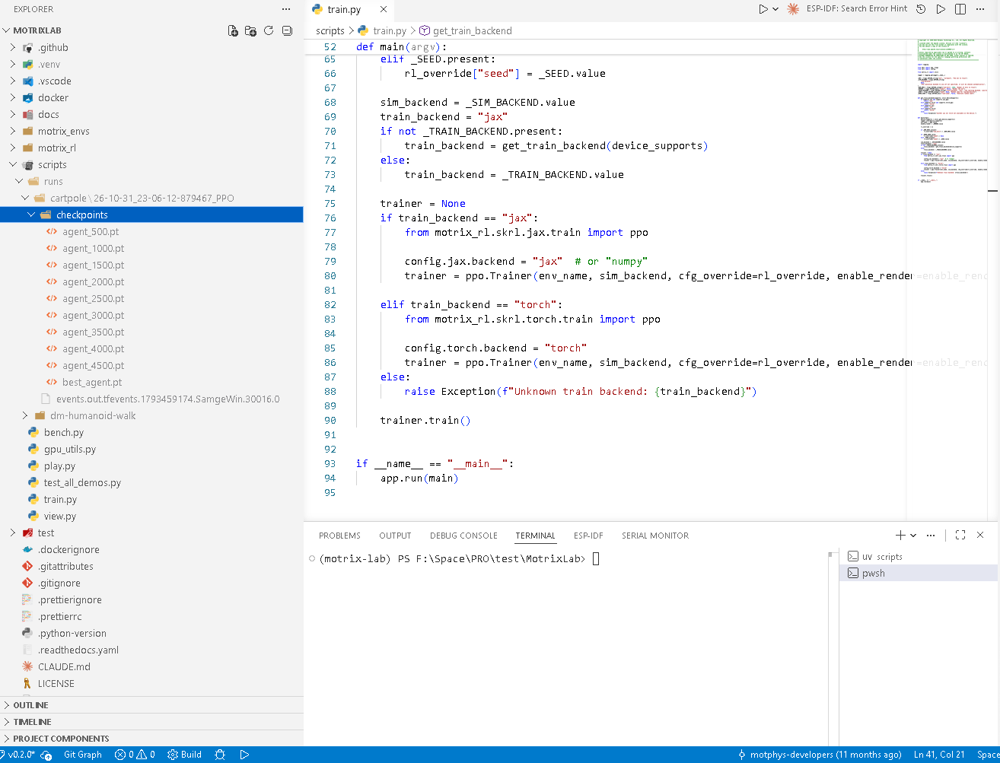
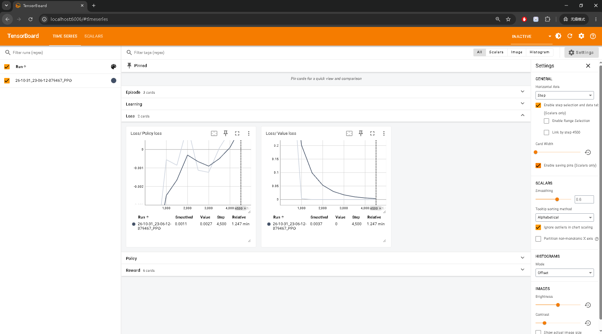
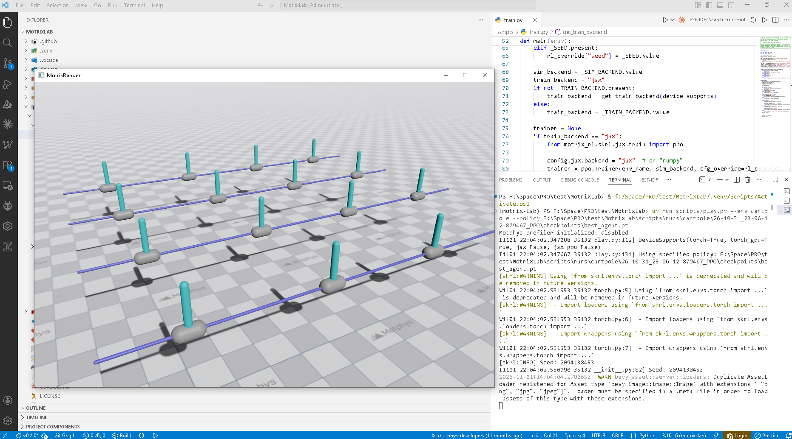

EnvCfg 的说法，正确的是？ （1 分）▾motrix_rl，描述训练算法超参motrix_envs，描述物理仿真与任务本身，与 RL 算法无关EnvCfg 的是？ （1 分）▾learning_rateratio_clipmax_episode_secondsnum_envsBaseRLCfg 的是？ （1 分）▾model_filesim_dtrender_spacingnum_envsPPOCfg 与 BaseRLCfg 的关系是？ （1 分）▾PPOCfg 继承 BaseRLCfg，在基础训练参数上叠加 PPO 超参BaseRLCfg 继承 PPOCfg@envcfg("cartpole") 装饰器把什么注册到 motrix_envs.registry？ （1 分）▾"cartpole" 为 key 与环境名绑定的 EnvCfg 子类registry.make() 的 env_cfg_override 中出现配置类不存在的属性时，会发生什么？ （1 分）▾ValueErrorTrainer 对 RLCfg 的 cfg_override 采用的方式是？ （1 分）▾rlcfg.replace(**cfg_override) 做不可变式覆盖--num-envs 参数最终写入哪里？ （1 分）▾PPOCfg.num_envsEnvCfg.model_file--env 换成另一个已注册的环境名runs/ 日志目录main 函数EnvCfg/RLCfg 子类，差异用不同环境名/backend 类，少量动态项用 override 覆盖train.py 里EnvCfg 或 RLCfg（每侧至少 3 个）：model_file, learning_rate, sim_dt, num_envs, rollouts, render_spacing, ratio_clip, max_episode_seconds
EnvCfg（环境侧 · motrix_envs）：model_file、sim_dt、render_spacing、max_episode_seconds RLCfg（训练侧 · motrix_rl）：learning_rate、num_envs、rollouts、ratio_clip
hasattr 检查）。env = registry.make(
name="my-env",
sim_backend="np",
num_envs=256,
env_cfg_override={"not_exist_param": 2.0},
)
ValueError，环境创建失败。原因：registry.make() 处理 env_cfg_override 时，会对每个 key 做 hasattr(env_cfg, key) 检查；not_exist_param 不是配置类的属性，hasattr 判否后直接 raise ValueError("Config class '...' has no attribute 'not_exist_param'")——既不会静默忽略，也不会自动补属性。正确做法：把 key 换成配置类中真实存在的字段名。motrix_envs.registry 管环境类，motrix_rl.registry 管 RL 训练配置motrix_envs.registry 管 RL 配置，motrix_rl.registry 管环境类registry.make(name, sim_backend=..., env_cfg_override=..., num_envs=...) 属于哪个注册表？ （1 分）▾motrix_rl.registrymotrix_envs.registrytrain.py 内置函数default_rl_cfg("cartpole", "skrl", backend="jax") 的作用是？ （1 分）▾EnvCfg 的 validate() 何时被调用？ （1 分）▾@envcfg 注册时registry.make() 实例化配置后@registry.envcfg("cartpole") 的那一刻，注册表里发生了什么？ （1 分）▾_envs["cartpole"] = EnvMeta(env_cfg_cls=..., env_cls_dict={})validate()@envcfg 与 @env 两个装饰器的使用顺序，正确的是？ （1 分）▾@envcfg，再有 @env@env，再有 @envcfgapply_action / update_state / resetstep / act / learntrain / play / viewload / save / renderbasic）的 __init__.py 里加 import，后果是？ （1 分）▾@rlcfg("cartpole") 没有写 backend 参数时，会注册到哪些后端？ （1 分）▾simple_walker 的新任务时，三处必须保持一致的字符串是？ （1 分）▾@envcfg / @env / @rlcfg 里的环境名（"simple_walker"）motrix_envs/.../simple_walker/cfg.py@registry.envcfg("simple_walker") # ① 装饰器
@dataclass
class SimpleWalkerEnvCfg(EnvCfg):
# ② 至少写出 3 个任务特有字段（如初始姿态、奖励相关几何、噪声等）
# ③ 并说明每个字段的用途
import os
from dataclasses import dataclass
from motrix_envs import registry
from motrix_envs.base import EnvCfg
model_file = os.path.dirname(__file__) + "/simple_walker.xml"
@registry.envcfg("simple_walker") # 以环境名为 key 注册 EnvCfg 子类
@dataclass
class SimpleWalkerEnvCfg(EnvCfg):
# 机器人模型文件路径（MJCF 资产），EnvCfg 基类字段
model_file: str = model_file
# reset 时关节初始位置噪声幅度：打破同批次环境初态完全一致，提升鲁棒性
reset_noise_scale: float = 0.01
# 单条 episode 最长秒数：超时终止（timeout），基类据此换算 max_episode_steps
max_episode_seconds: float = 20
# 渲染模式下相邻并行环境的间距，只影响可视化、不影响训练
render_spacing: float = 2.0
simple_walker_np.py@registry.env("simple_walker", "np")（环境名 + 仿真后端，类继承 NpEnv）apply_action（把策略输出的动作写入执行器控制量）→ update_state（推进仿真后计算 obs / reward / terminated）→ reset（把环境重置回初始状态分布）。__init__.py 里分别加什么 import？RL 侧又需要在 motrix_rl/cfgs.py 里加什么？# 1. motrix_envs/.../simple_walker/__init__.py —— 触发本任务两组装饰器执行
from . import cfg, simple_walker_np # noqa: F401 import to register
# 2. motrix_envs/envs/basic/__init__.py —— 把任务挂进分类聚合 import
from . import ( # noqa: F401 import to register envs
acrobot,
cartpole,
# ...,
simple_walker, # ← 新增
)
# 3. motrix_rl/cfgs.py —— RL 侧：在对应分组下补默认训练配置类
class basic:
@rlcfg("simple_walker") # 不写 backend → jax / torch 各注册一份
@dataclass
class SimpleWalkerPPO(PPOCfg):
max_env_steps: int = 10_000_000
check_point_interval: int = 500
rollouts: int = 32
learning_epochs: int = 5
mini_batches: int = 4
uv run scripts/train.py --env simple_walker
train.py 中必填的参数是？ （1 分）▾--num-envs--env--train-backend--sim-backend--sim-backend 参数的默认值是？ （1 分）▾jaxtorchnpTrainer.__init__() 中加载配置与创建环境的顺序是？ （1 分）▾env_registry.make() 创建环境，再取 RL 配置default_rl_cfg() 取默认 RL 配置（可再 replace 覆盖），训练时才创建环境env_registry.make() 的完整流程是？ （1 分）▾_envs 注册表 → 实例化 env_cfg_cls()（+override+validate）→ 选 sim_backend → 构造环境wrap_env() 的作用是？ （1 分）▾EnvCfg 里的参数NpEnv 适配成 SKRL 的 reset/step 接口（如 SkrlNpWrapper）num_envs 个环境 step，收集 rollouts 步经验，做 learning_epochs 轮 mini-batch 更新get_log_dir(env_name) 决定，默认落在哪里？ （1 分）▾models/{env_name}logs/{env_name}runs/{env_name}checkpoints/{env_name}.pickle.pt.npy.onnxplay.py 的 find_best_policy() 在 runs/{env}/ 下优先选哪个文件加载？ （1 分）▾agent_500.pickle（数字最小的）checkpoints/best_agent.pickleevents.out.tfevents.*play.py --env cartpole --policy <checkpoint路径> 后会发生什么？ （1 分）▾act → step → render 播放演示assets/week2/ 下即可自动显示。F:\Space\PRO\test\MotrixLab\scripts\runs\cartpole\26-10-31_23-06-12-879467_PPO（内含 checkpoints/ 或 events.out.tfevents.*）
uv run tensorboard --logdir runs/cartpole
uv run scripts/play.py --env cartpole --policy F:\Space\PRO\test\MotrixLab\scripts\runs\cartpole\26-10-31_23-06-12-879467_PPO\checkpoints\best_agent.pt
| 讲次 | 1 | 2 | 3 | 4 | 5 | 6 | 7 | 8 | 9 | 10 |
|---|---|---|---|---|---|---|---|---|---|---|
| 第 5 讲 配置系统 | B | C | D | B | B | C | B | A | A | B |
| 第 6 讲 注册系统 | A | B | B | C | B | A | A | B | C | A |
| 第 7 讲 训练流程 | B | C | B | A | C | B | C | A | B | C |